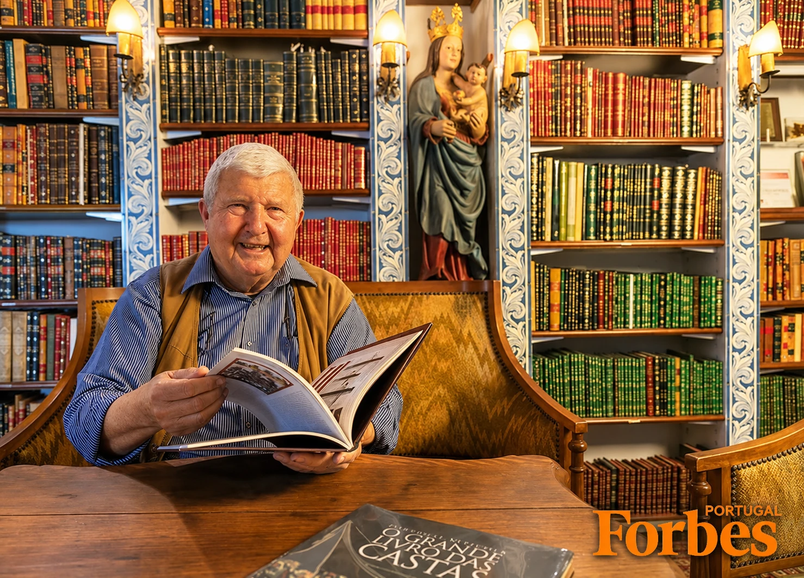
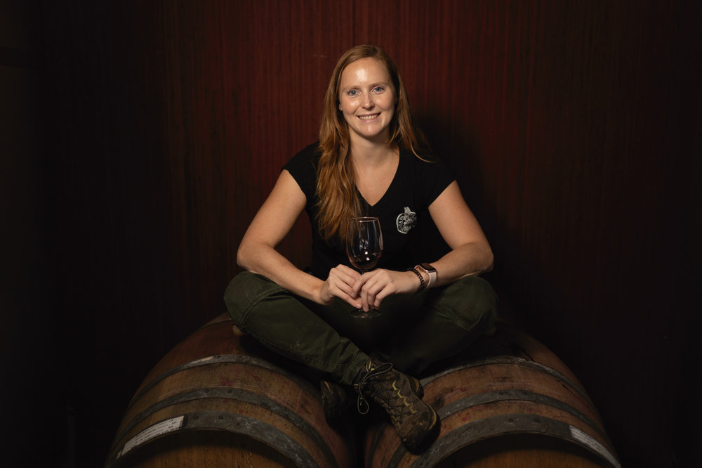
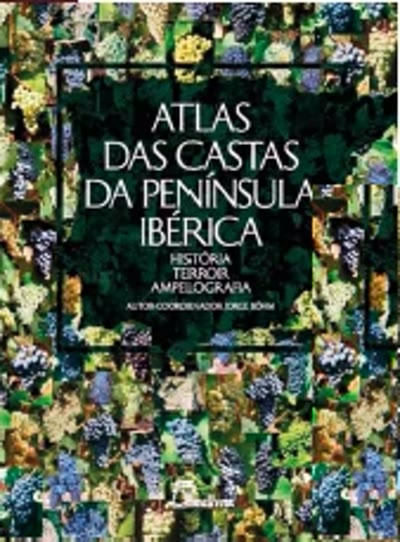
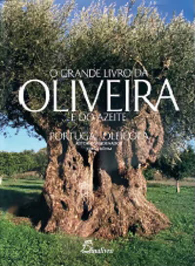
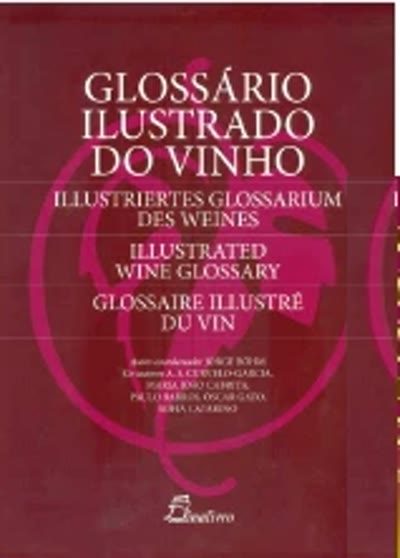

Selezione clonale
Dalle vecchie vigne si scelgono le piante più sane ed espressive e le si propaga.
 Albero genealogico01
Albero genealogico01
La famiglia Böhm
L'albero genealogico della famiglia Böhm risale al Palatinato. Al centro si trova Wachenheim sulla Strada del Vino tedesca, dipinta con l'anno 1579 e circondata dagli stemmi della famiglia e dei suoi antenati.
L'albero fa parte della “Cronaca della famiglia di Friedrich ed Emilie Böhm e dei loro discendenti”, che Jorge Böhm ha pubblicato per la famiglia nel 2013.

 Jorge Böhm02
Jorge Böhm02

Fondatore del Plansel Group
Ricercatore della vite, commerciante di vino e fondatore di Viveiros Plansel. La sua selezione clonale caratterizza ancora oggi gran parte dei vigneti del Portogallo.
“Il Portogallo ha bisogno di una propria ricerca, per non dipendere da varietà che non si adattano al suo suolo e al suo clima.”
Biografia
Comendador Jorge (Hans Jörg) Böhm, nato nel 1938 a Neustadt an der Weinstraße, proviene da una famiglia tedesca di commercianti di vino. Nel 1961 la sua barca a vela si incagliò vicino a Cascais e si innamorò del Portogallo. Già nel 1969 l'azienda di famiglia sotto la sua guida era il maggiore importatore di vino portoghese in Germania.
Dopo aver studiato miglioramento genetico della vite a Geisenheim, nel 1981 fondò Viveiros Plansel e avviò la prima selezione clonale sistematica dei vitigni portoghesi, con la Universidade de Évora e l'attuale INIAV. Oltre 30 progetti di ricerca dopo, i cloni Plansel sono riconosciuti in California, Nuova Zelanda e Australia, e gran parte dei vigneti del Portogallo cresce su viti Plansel, distribuite da Viveiros Plansel e Vinverus.
Nel 2006 il Presidente della Repubblica Portoghese lo nominò Comendador de Mérito Agrícola.
Nato a Neustadt an der Weinstraße in una famiglia tedesca di commercianti di vino.
La barca a vela di Jorge Böhm si incaglia nel porto di Cascais. Rimane, conosce il paese e vede il potenziale dei vitigni dell'Alentejo.
Sotto la sua guida l'azienda di famiglia diventa il maggiore importatore di vini portoghesi in Germania.
Acquista i primi terreni vicino a Montemor-o-Novo. Diventano il vivaio Viveiros Plansel.
Fonda Viveiros Plansel e avvia la prima selezione clonale sistematica dei vitigni portoghesi.
Con Paulo Laureano nasce il primo vino nella cantina sperimentale dell'Università di Évora. Il suo nome: Plansel, abbreviazione di “Plantas Seleccionadas”.
Comendador de Mérito Agrícola, nominato dal Presidente della Repubblica
Esce O Grande Livro das Castas; nel 2010 vince il Premio OIV.
Miglior esperto di viticoltura, Revista de Vinhos
Targa d'onore, Universidade de Évora
Medaglia d'onore, Academia das Ciências de Lisboa
Nuovo libro: Livro Branco das Castas Vitícolas.
Ricerca
Dalle vecchie vigne si scelgono le piante più sane ed espressive e le si propaga.
Viti che richiedono meno fitofarmaci. Böhm lo considera il compito più importante del settore.
Materiale vegetale per estati più calde e meno acqua, testato in Alentejo.
Vitigni portoghesi quasi dimenticati vengono riscoperti e sperimentati nel vino.
 Dorina Böhm-Lindemann03
Dorina Böhm-Lindemann03

La nuova generazione
Dorina ha studiato enologia all'Università di Geisenheim. Nel 1997 ha fondato la cantina della Quinta da Plansel sui terreni del padre a Montemor-o-Novo; nel 1999 ha prodotto il suo primo vino premium con il proprio nome, 2.000 bottiglie. Oggi guida la Quinta come CEO, insieme alle figlie Júlia e Luísa.
Insegna vitigni, clima e regioni del Portogallo all'Università di Geisenheim ed è degustatrice ufficiale di Mundus Vini. I suoi vini sono stati premiati a Mundus Vini, Decanter e IWC.
 Luísa Lindemann04
Luísa Lindemann04

Enologia e vendite internazionali
Luísa è figlia di Dorina e collabora alla guida della Quinta da Plansel. È responsabile dell'enologia e delle vendite internazionali.
Come sua madre, è degustatrice ufficiale di Mundus Vini. Insieme conducono degustazioni a eventi, in hotel e in fiera, in Europa e nel mondo.
 Júlia Lindemann05
Júlia Lindemann05

Marketing, social media e finanze
Júlia è figlia di Dorina e collabora alla guida della Quinta da Plansel. Si occupa di marketing, social media e finanze.
Il suo nome è sul Júlia Lindemann Tinto 2019 Limited Edition, premiato con l'argento a Mundus Vini 2024.
 Libri06
Libri06
Libri







Finora Wikipedia ha articoli su di lui solo in portoghese e tedesco. Questa pagina riassume la sua vita in sette lingue.